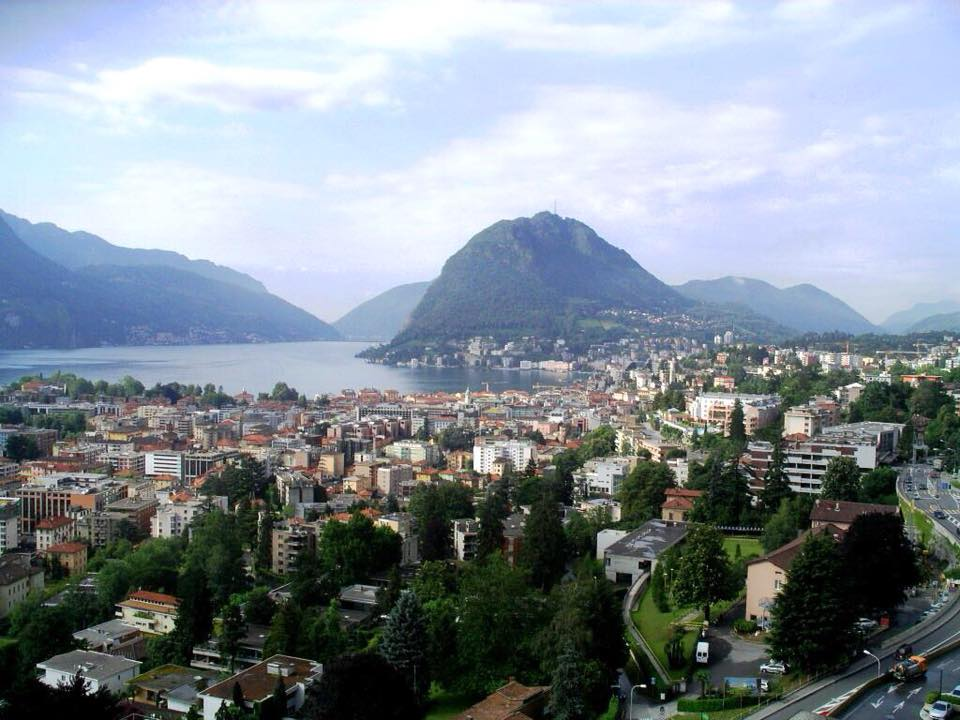
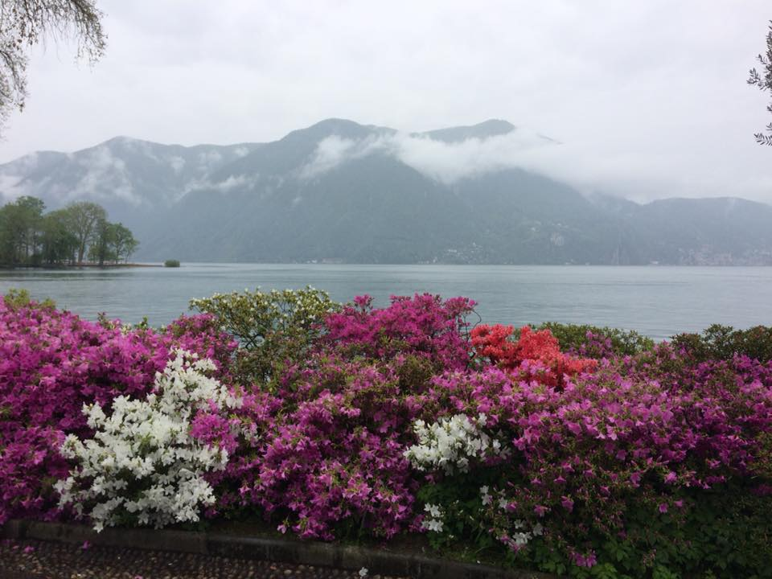
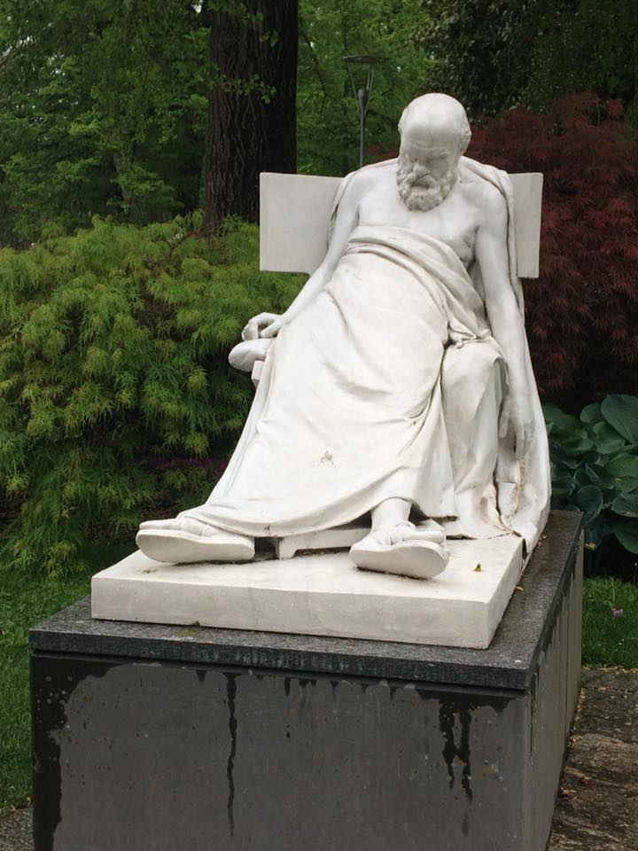
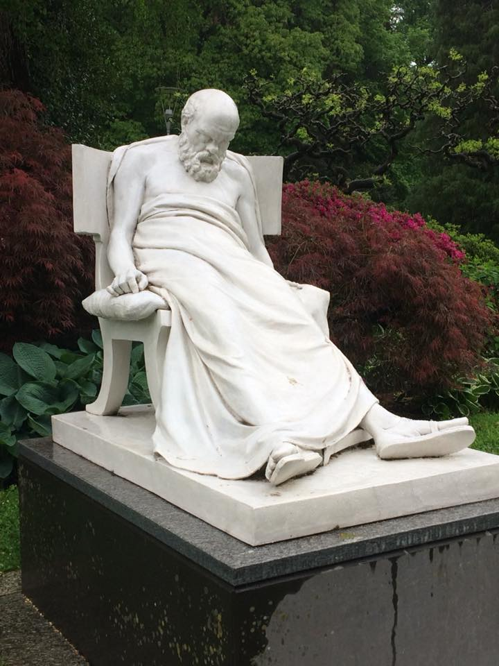
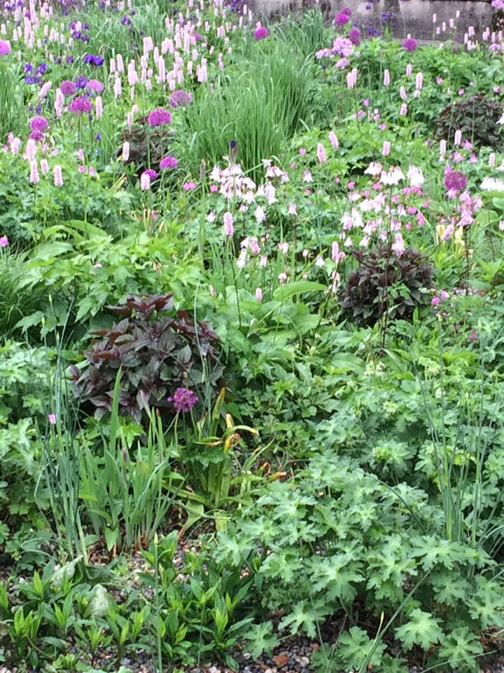
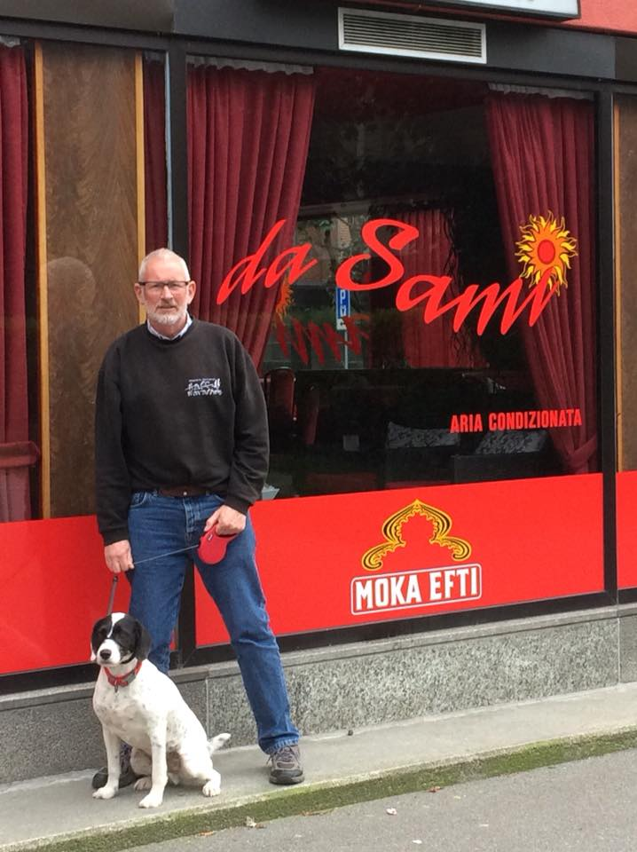

Despite its long and varied history, including fighting between the opposing Guelphs and Ghibellines and the disputes between Como and Milan during the 14th and 15th centuries, Lugano is possibly now best known as the host-city of the very first Eurovision Song Contest in 1956.
It also does excellent municipal planting (something in which Sammy was very interested) and a sad-looking sculpture (presumably Socrates after he had taken his hemlock or possibly me after one too many sherries?) - but I can find no reference whatsoever as to why it should be here ...
[Subsequently I have discovered that it IS Socrates and by Mark Matveyevich Antokolsky. Born in Lithuania in 1843 he spent time in the Italian lakes due to ill health.]
ven with bacon, tasted as bland as they look. Home now for asparagus risotto!





Sammy (Sami?) looking a bit disgruntled that this homonymous bar / restaurant offers an “aria” which is “condizionata”. What would Mozart think?
“aria” which is “condizionata”. What woul
